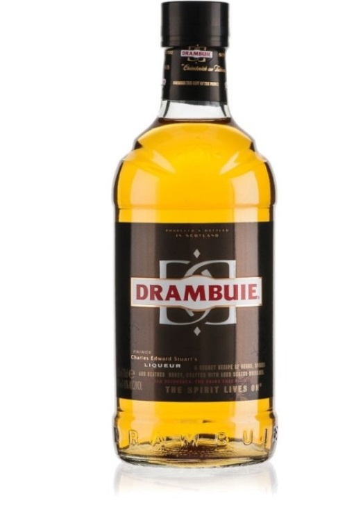

혼성주
혼성주는 증류주나 주정에 당분을 넣고 과실이나 꽃, 식물의 잎이나 뿌리 등을 넣어 맛과 향기를 더한 술을 말한다.
즉, '이미 완성된 술'에 향을 내기 위하여 향신료 및 감미료를 더한 술이다.
한국의 주세법상으로는 불휘발분이 2% 미만이면 일반증류주, 2% 이상이면 리큐르로 본다. 프랑스는 알코올 15% 이상, 당분 20% 이상, 향신료가 첨가된 술을 Liqueur이라 하고, 미국에서는 Spirit에 당분 2.5% 이상을 함유하여, 천연향(과실, 약초, 즙 등)을 첨가한 술을 Liqueur이라 하며, Liqueur를 Cordial이라고 부르기도 한다.
제조방법
- 침출법(Infusion) 과일이나 약초, 향료 등에 증류주를 가해 향미 성분을 융해시키는 방법. 재료의 향취, 향미가 증류주에 충분히 배어들면 여과하고 착색, 가당 등의 단계를 거친다. 열을 가하지 않으므로 콜드 방식(Cold Method)이라고 한다. 이것을 특히 코디알(Cordial)이라 한다.
- 증류법(Distillation) 방향성의 물질인 식물의 씨, 잎, 뿌리, 껍질 등을 강한 주정에 담아서 부드럽게 한 후에 그 고형물질이 있는 채 침출물을 증류는 것이다. 이렇게 얻은 향이 좋은 주정성 음료에 설탕 또는 시럽의 용액과 야채 농축이나 태운 설탕의 형태로 된 염료를 첨가하여 감미와 색을 낸다. 증류주에 원료를 배합하여 단식 증류법으로 만드는 방법으로서 증류과정에서 없어진 맛과 향을 보충하여 준다. 증류주에 원료를 섞어 단식증류법으로 만드는 방법으로써 침출법으로 만든 것보다 잡내와 잡맛이 덜한 경우가 많다. 증류 시 무색투명한 술이 나오며, 이후 착색하고 가당한다.
- 향유혼합법(Essence) 독일에서 많이 사용하는 방법으로서 일명 에센스법이라고도 하는데 방향유를 증류주(알코올)에 혼합하는 방법으로 품질은 약간 좋지 못하다. 주로 저가 리큐르나 유명 리큐르의 싸구려 카피제품을 만들 때 쓰이는 방법이다.
- 여과법(Percolation) 커피 만드는 방법과 비슷하다. 허브 등의 재료를 커피 여과시키는 것처럼 기계의 맨 윗부분에 놓고 증류주는 밑부분에 놓는다. 열을 가하여 알코올이 함유된 증기가 윗부분의 향료를 통하여 지나가면서 액화시키거나 액체 증류주 자체가 위로 펌프되어 향료에 접히게 된다. 이렇게 향취를 얻은 증류주에 당분을 가미하고 색깔도 첨가시키는데 첨가 후 다시 여과시킨다.
재료
견과류(씨앗)
말리부 : 플레버드 럼의 일종으로, 바베이도스에서 생산되는 알코올 농도 21%의 리큐르. 화이트럼에 코코넛을 으깨 넣어 숙성시킨 후 걸러서 만든다. 럼 특유의 맛에 코코넛향이 더해진 맛이다. 과일
미도리 : 일본의 주류 메이커 산토리에서 1978년 출시한 멜론 리큐르. 설탕과 식용색소, 향료로 멜론 맛을 내었다. 약초(herb)
비터스(Bitters) : 유럽 쪽에서 약용으로 쓰이던 술들을 의미하는 말이다. 약용 식물(허브)를 주정에 넣고 추출해낸 형태로서, 알코올에 추출하였기 때문에 성분을 더 많이 추출해낼 수 있었으며, 알코올 성분이 있어서 보존성도 높았다. 보통 거의 간장을 연상하게 할 정도로 진하게 농축되어 작은 병에 포장되어 있다.

아마레토 : 원래는 비터 아몬드를 이용하여 만드는 리큐르이며, 특유의 달콤한 풍미와 아몬드 향미로 유명하다. 이탈리아의 디사론노 사에서 가장 처음 만들어졌으며, 특유의 울퉁불퉁한 사각형 병에 들어 있는 DISARONNO ORIGINALE로서 아직도 나오고 있다. 이후 이 리큐르를 이용하여 다양한 칵테일 레시피가 나오게 되자 전 세계로 널리 퍼졌다.
이름과 같이 녹색, 정확히는 연녹색을 띄고 있어 칵테일 제조에 많이 쓰인다. 부드러운 멜론 향과 달콤하게 넘어가는 뒷맛이 특징이다. 미도리 전용의 칵테일로서 미도리 사워라는 칵테일이 유명하다. 많은 칵테일에서 일본을 대표하는 리큐르로 취급된다.
서던 컴포트 : 1874년 미국에서 개발된 리큐르의 일종. 당시 생산되던 버번 위스키의 질이 너무 들쭉날쭉해 이를 고르게 만들고, 마시기 쉽게 하기 위해 이것저것 재료를 첨가해서 만들어진 것이 시초이다.
21%, 35%, 40%, 50% 등 몇 가지 종류가 있지만 가장 흔히 보이는 것은 35%로, 이것이 표준으로 여겨진다. 버번 위스키에 바닐라, 계피, 정향 등 여러 가지 향신료와 레몬, 오렌지, 체리 등의 과일을 넣어 숙성한 후 꿀을 첨가하여 만든다. 미국의 전통 리큐르로 취급되고 있으며, 많은 19~20세기 초의 작품에서 언급될 정도로 유명한 술이다.
맨해튼에 사용되는 앙고스투라 비터스가 가장 유명하며, 사제락에 사용되는 페이쇼드 비터스도 유명하다. 예거마이스터나 캄파리, 샤르트뢰즈, 스즈 등이 모두 비터스의 일종이었던 것을 개량해서 만든 술이라고 할 수 있다.
